Driveways & patiosJet washing and paving care
KENT · EXTERIOR CLEANING
The difference is clear to see.
Driveways, patios, gutters, roofs, windows and exterior surfaces cleaned with care across Kent.
Real before & after workDriveways & patiosGutters & rooflines
Roof cleaningMoss and surface cleaning
Gutters & rooflinesGutter clearance, fascias and soffits
Windows & exteriorsRegular and one-off cleaning
THE KENT JET FINISH
From built-up grime to a fresh surface.
The supplied before-and-after photos show what a thorough clean can do for paving, cladding, roofs, gutters and solar panels. Kent Jet works on the areas people notice first and the parts that are harder to reach.
Request a quote →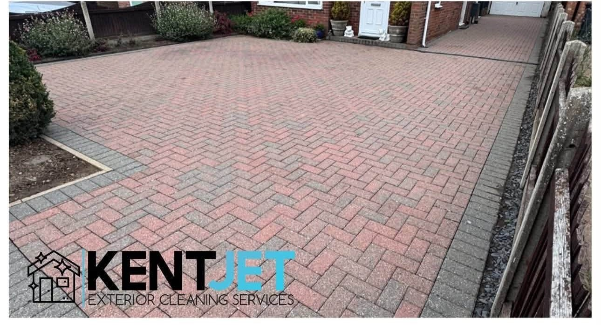
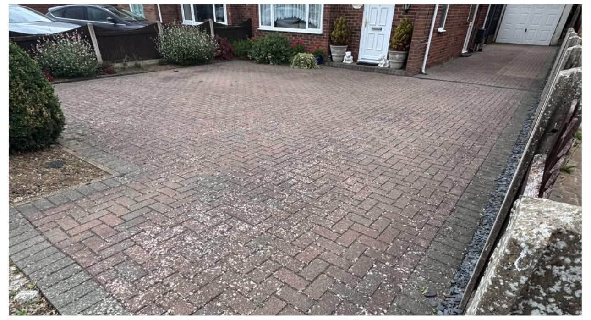
DRIVEWAY & PATIO CLEANING
See what was under the dirt.
Kent Jet's own project photos show paving brought back to a cleaner, brighter finish. From small back patios to larger block paved driveways, the transformation is easy to see.
Ask about your paving →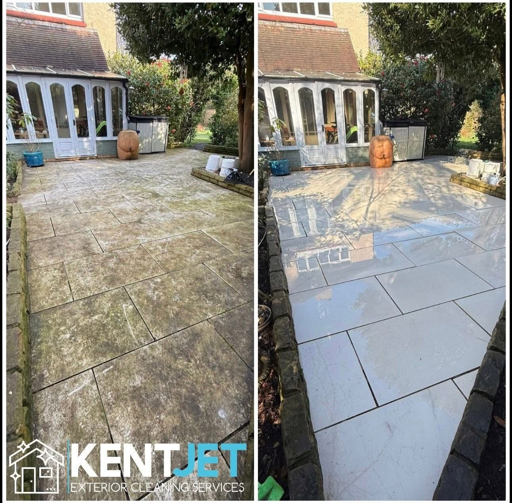
REAL KENT JET RESULTS
See the whole transformation.
Each comparison uses the complete Before and After photos from the same supplied Kent Jet project.
01 / KENT JET WORK
Patio paving
A stone patio cleaned and its colours brought back.
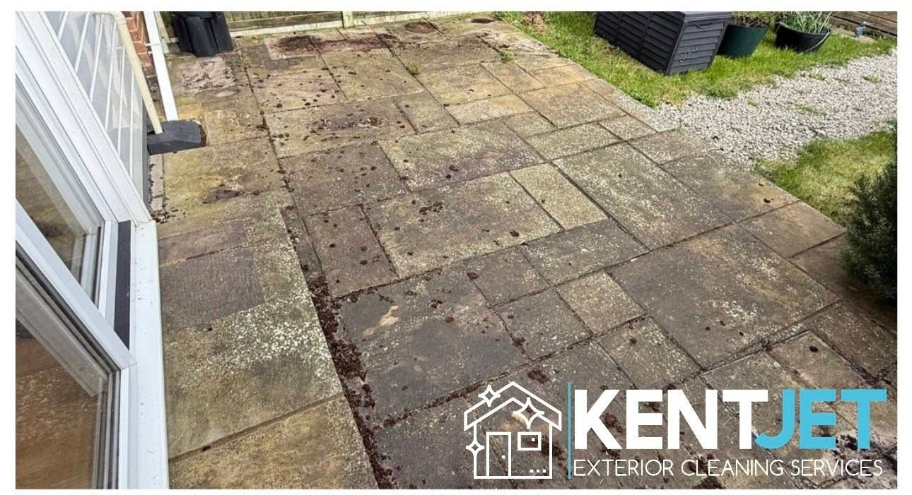
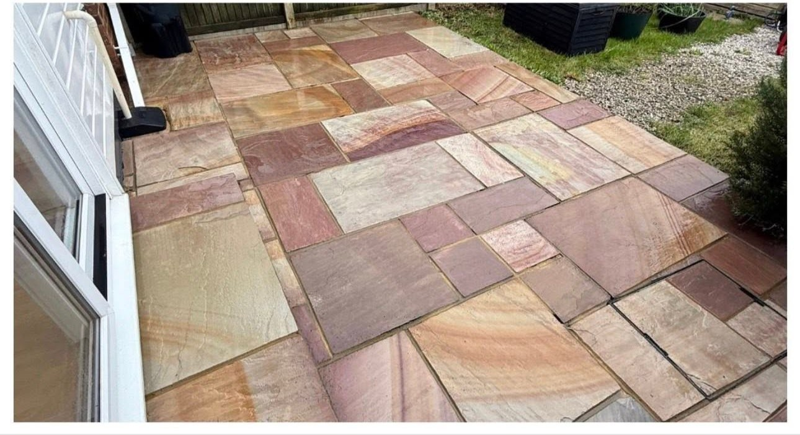
02 / KENT JET WORK
Driveway cleaning
Block paving before and after a thorough clean.
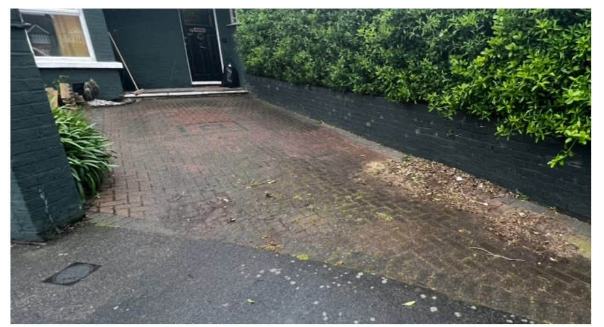
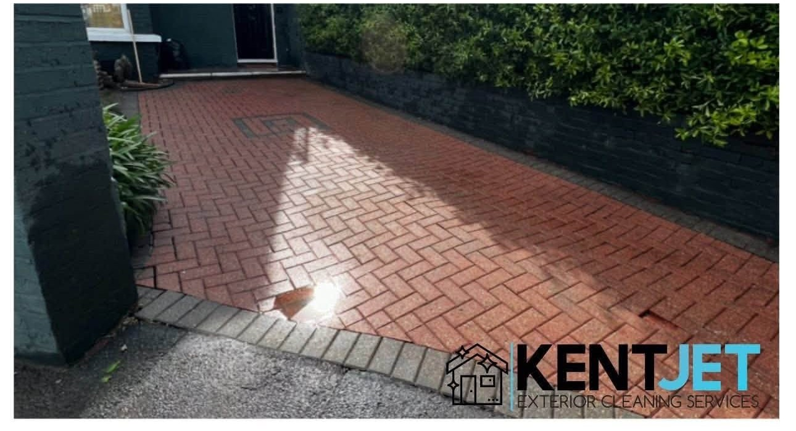
03 / KENT JET WORK
House cladding
A cleaner exterior finish on the same property.
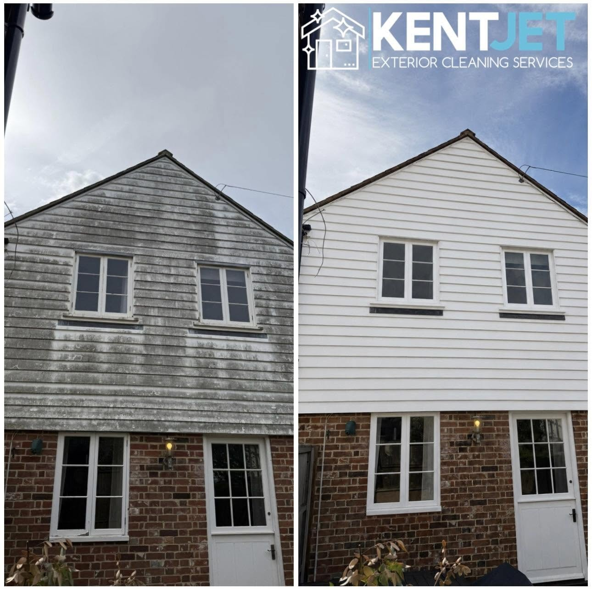
04 / KENT JET WORK
Solar panels
Visible surface cleaning across the panels.
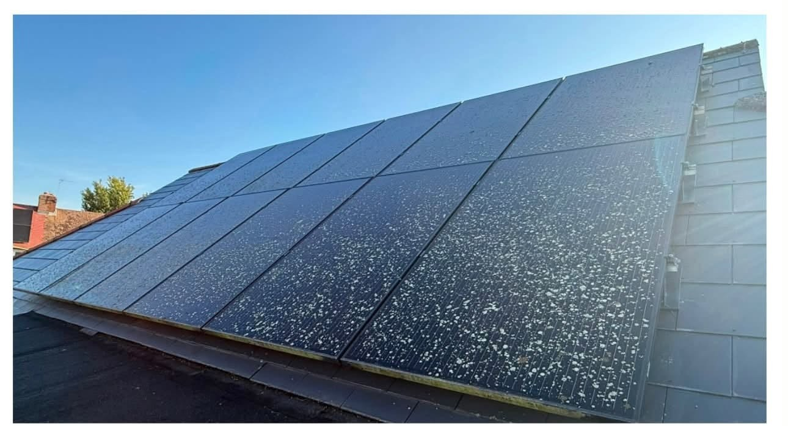
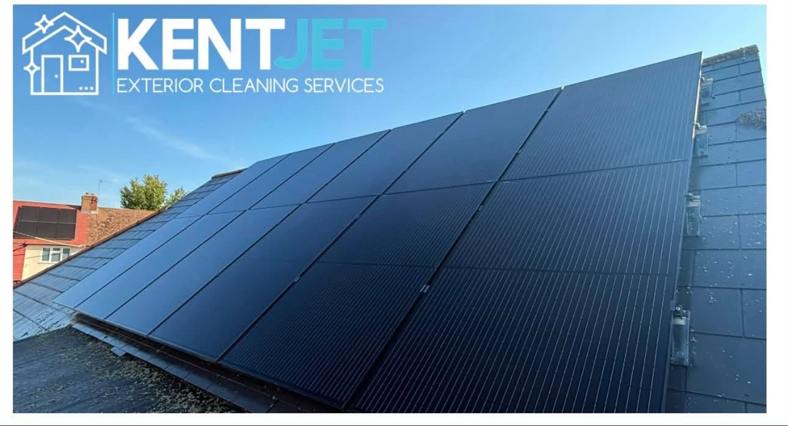
05 / KENT JET WORK
Gutter clearing
A cleared gutter ready to drain again.
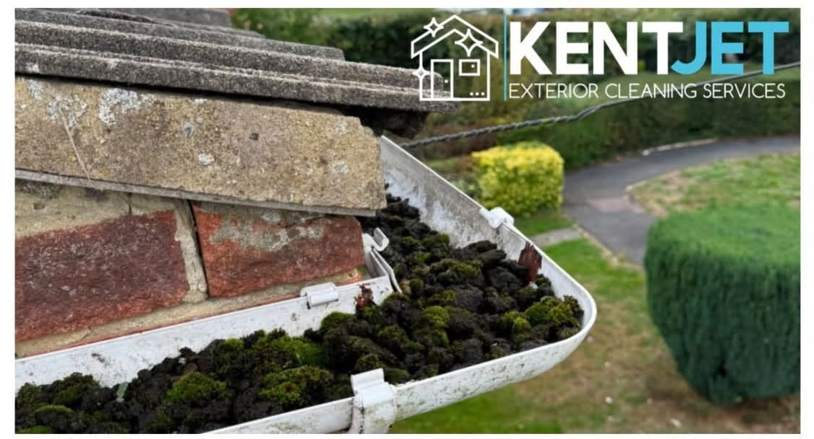
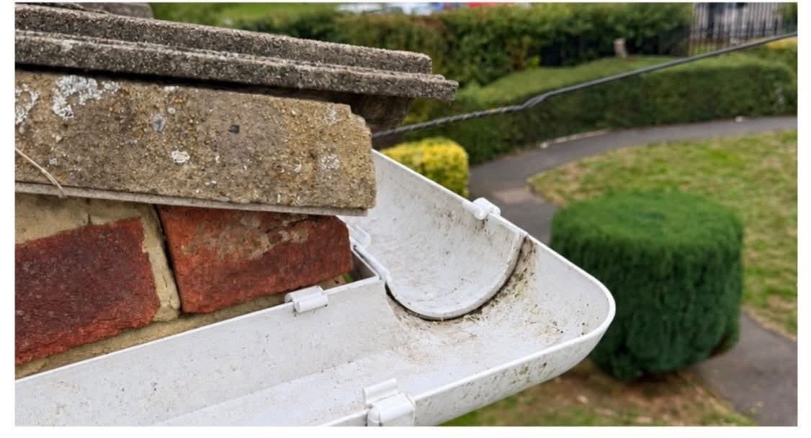
06 / KENT JET WORK
Roof cleaning
Roof tiles shown before and after cleaning.
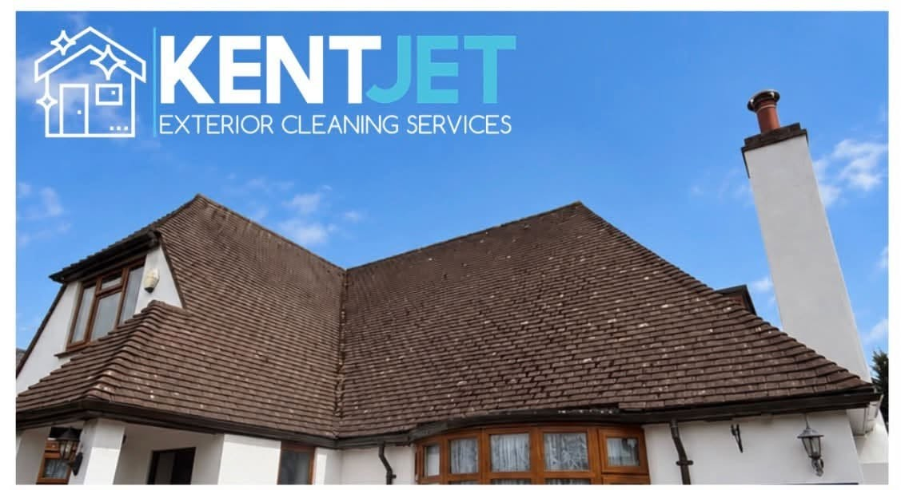
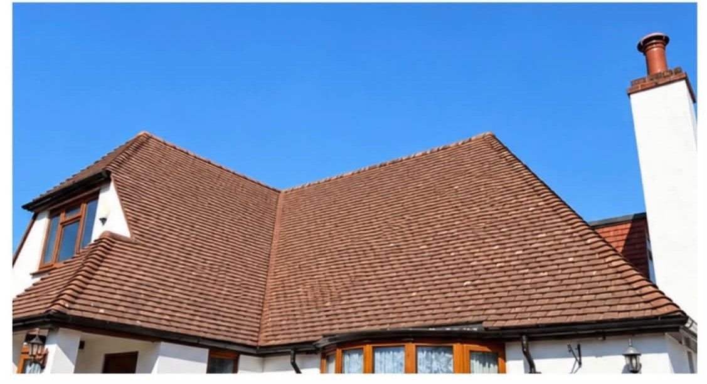
BEFORE & AFTER
One driveway. A visible transformation.
These are the complete before and after frames from one supplied Kent Jet driveway project.
Get a quote for yours →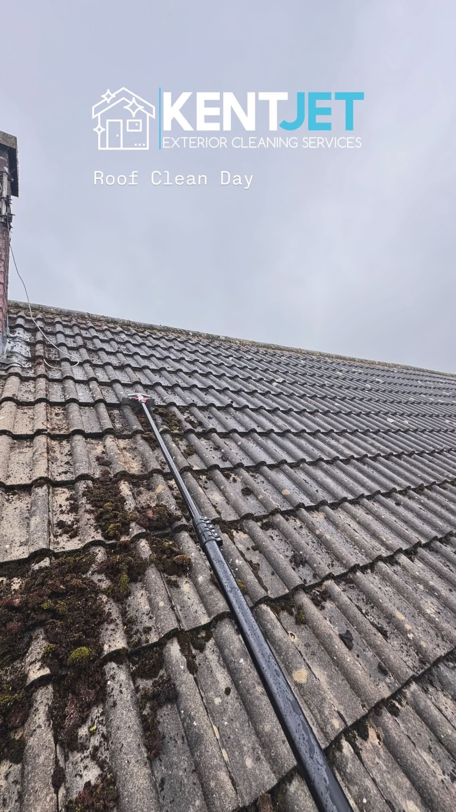
KENT EXTERIOR CLEANING
Care for more than the driveway.
Kent Jet Exterior Cleaning Services works throughout Kent on exterior surfaces, with supplied photos showing pressure washing, roof work, gutter clearing and exterior detailing.
01
Actual project photos
See real before-and-after results across several surfaces.
02
Home exteriors
Driveways, patios, roofs, gutters, windows, fascias and soffits.
03
Flexible cleaning
One-off and regular exterior cleaning enquiries welcome.
REQUEST A QUOTE
Tell Kent Jet what needs cleaning.
Complete the form and WhatsApp opens with your project details ready to send. This is a quote request, not a confirmed booking.
Prefer to talk? Call 07727 308154.
KENT JET EXTERIOR CLEANING
Ready to see the difference?
Kent · Call or WhatsApp to request a quote.